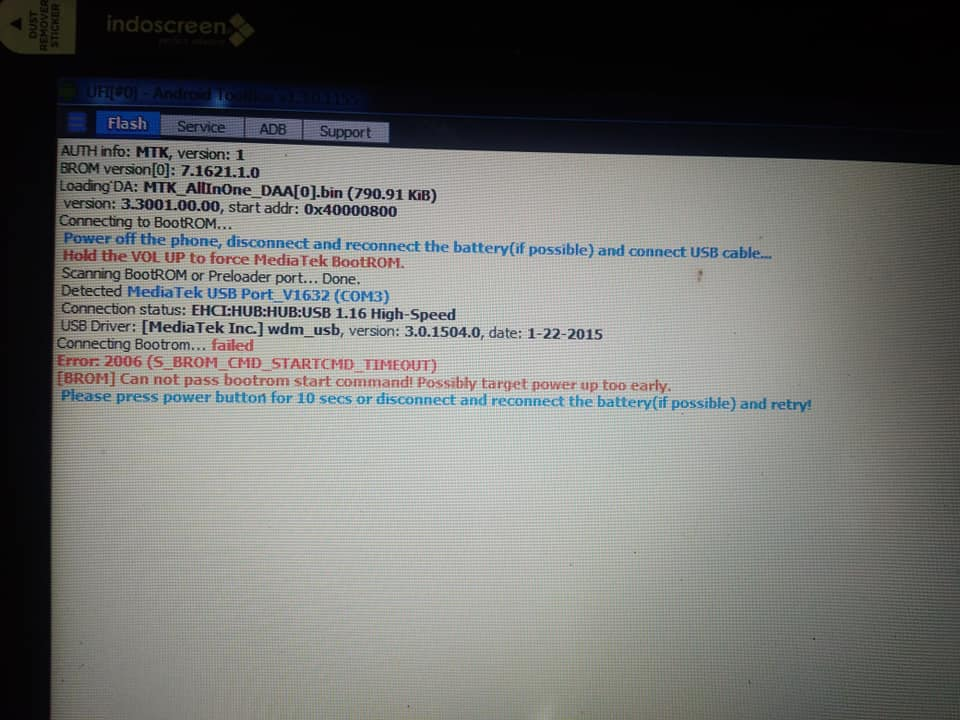
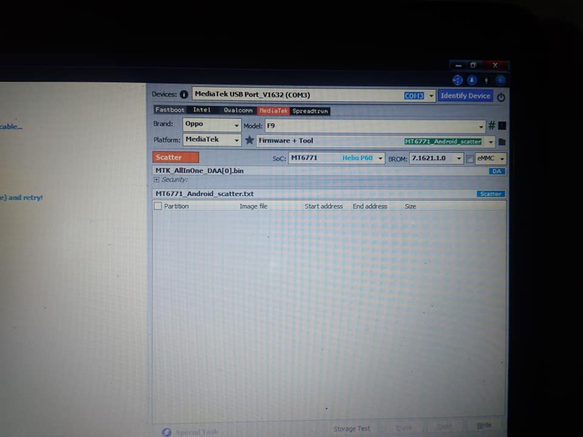
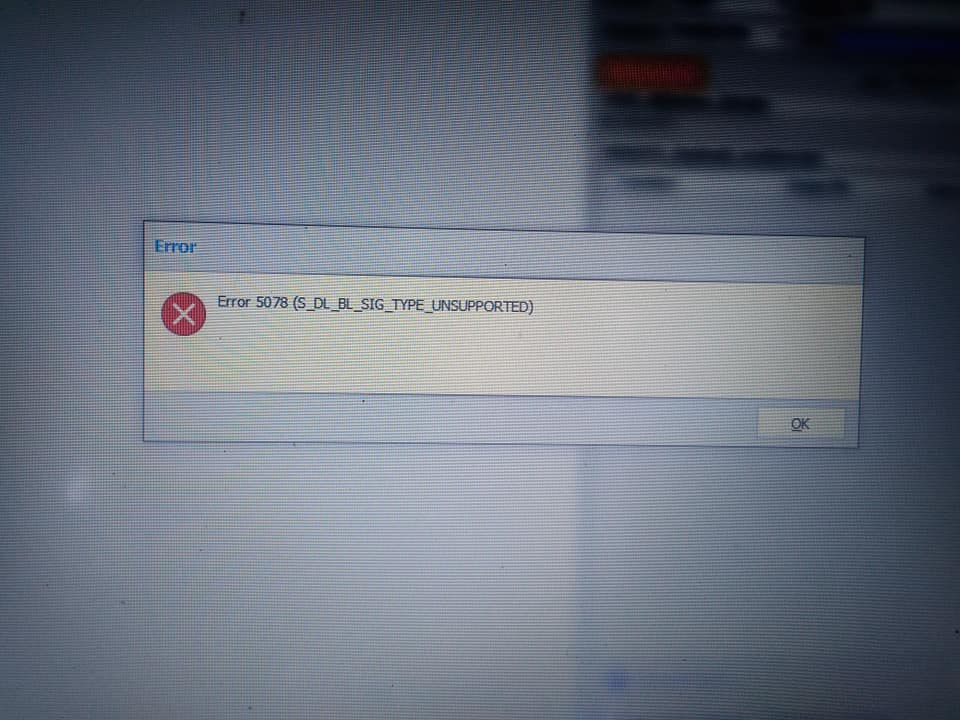
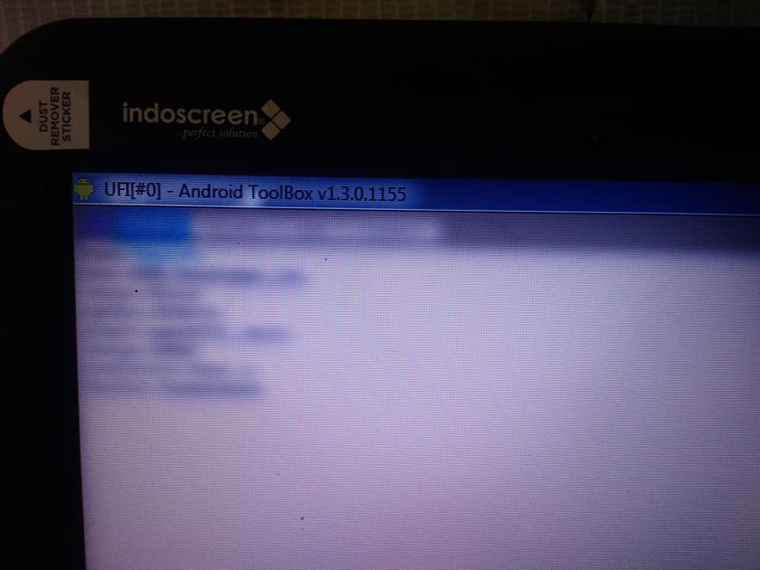
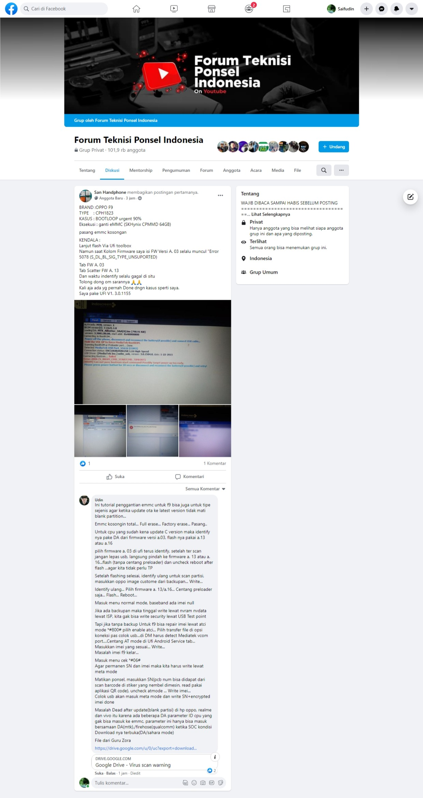

BRAND : OPPO F9
TYPE : CPH1823
KASUS : BOOTLOOP urgent 90%
Eksekusi : ganti eMMC (SKHynix CPMMD 64GB) - > pasang emmc kosongan
KENDALA :
Lanjut flash Via Ufi toolbox
Namun saat Kolom Firmware saya isi FW Versi A. 03 selalu muncul "Error 5078 (S_DL_BL_SIG_TYPE_UNSUPORTED)
Tab FW A. 03
Tab Scatter FW A. 13
Dan waktu indentify selalu gagal di situ
Tolong dong om sarannya 🙏🙏
Kali aja ada yg pernah Done dngn kasus sperti saya.
Saya pake UFI V1. 3.0.1155





Solution
Ini tutorial penggantian emmc untuk f9 bisa juga untuk tipe sejenis agar ketika update ota ke latest version tidak mati blank partition...
Emmc kosongin total... Full erase... Factory erase... Pasang..
Untuk cpu yang sudah kena update C version maka identify nya pake DA dari firmware versi a.03, flash nya pakai a.13 atau a.16
pilih firmware a. 03 di ufi terus identify, setelah ter scan jangan lepas usb, langsung pindah ke firmware a. 13 atau a. 16...flash (tanpa centang preloader) dan uncheck reboot after flash ...agar kita tidak perlu TP
Setelah flashing selesai, identify ulang untuk scan partisi, masukkan oppo image custome dari backupan... Write...
Identify ulang... Pilih firmware a. 13/a.16... Centang preloader saja... Flash... Reboot...
Masuk menu normal mode, baseband ada imei null
Jika ada backupan maka tinggal write lewat nvram nvdata lewat ISP, kita gak bisa write security lewat USB Test point
Tapi jika tanpa backup Untuk f9 bisa repair imei lewat atci mode *#800# pilih enable atci... Pilih transfer file di opsi koneksi pas colok usb...di DM harus detect Mediatek vcom port....Centang AT mode di Ufi Android Service tab... Masukkan imei yang sesuai... Write...
Masalah imei f9 kelar...
Masuk menu cek *#06#
Agar permanen SN dan imei maka kita harus write lewat meta mode
Matikan ponsel, masukkan SN(pcb num bisa didapat dari scan barcode di stiker yang nembel dimesin, read pakai aplikasi QR code), uncheck atmode ... Write imei...
Colok usb akan masuk meta mode dan write SN+encrypted imei done
Masalah Dead after update(blank partisi) di hp oppo, realme dan vivo itu karena ada beberapa DA parameter ID cpu yang gak bisa masuk ke emmc, parameter ini hanya bisa masuk bersamaan DA(mtk),/firehose(qualcomm) ketika SOC kondisi Download nya terbuka(DA/sahara mode)
File dari Guru Zora